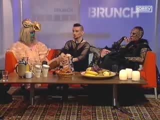
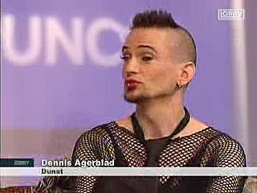
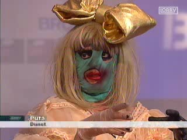
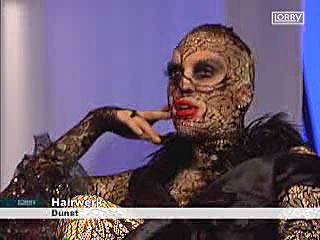

Dennis Agerblad sang sin sang "It'a All A Dream" med Hairwerk og Puta som kor i TV2 Lorry - BRUNCH. |
| Windows Media Player |
| Se her programmet "Brunch" på TV2-Lorry hvor Puta, Dennis Agerblad & Hairwerk synger en sang og fortæller om dunst. |



